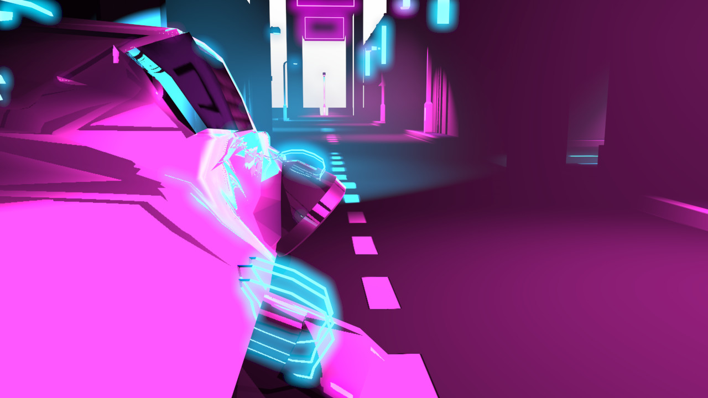
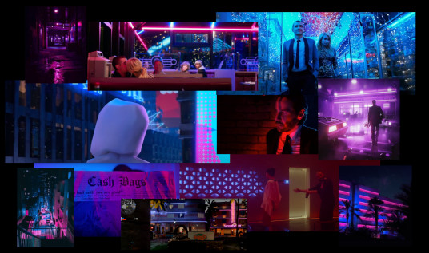
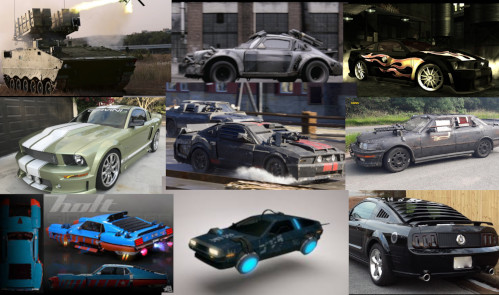
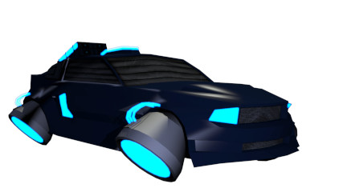
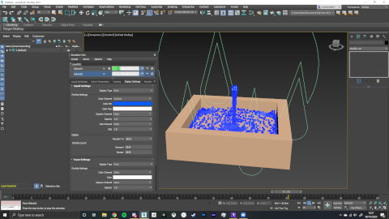
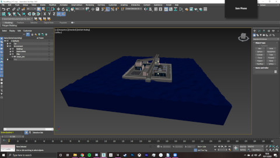
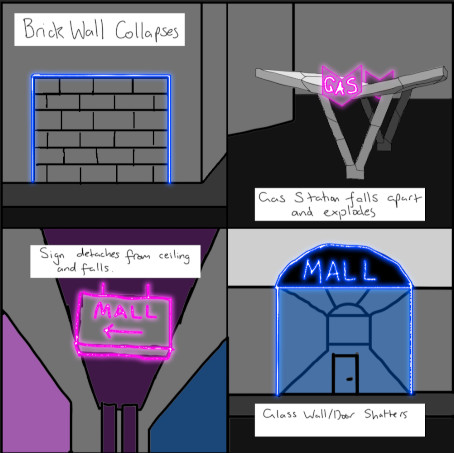
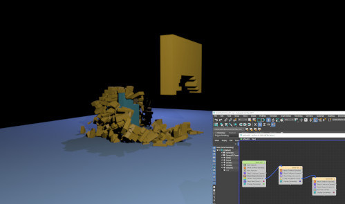
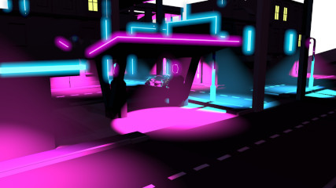
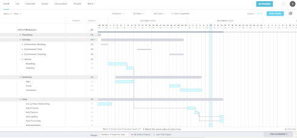

Neon City
The Multiplayer Tank Game
'Neon City' is a small diorama environment, set in the slightly near future in a part of a city. I created this project during my 3rd year at Glasgow School of Art,
the main purpose of this project was to create a multiplayer tank shooter and implement multiple 'destructible' objects within the environment.
The main inspirations of this project were Batman: Arkham Knight (Rocksteady Studios) with the aesthetics being inspired by the colour schemes from the movie
Nerve (2016).

Genre: Tank, Shooter, Multiplayer
Engine: Unity
Development Period: Approx 9 weeks
Platform: PC
Art Direction
The Neon City
For the environment, I wanted to create a sort of cramped small city-like area for the cars to go around that was strongly lit by the neon lights of the streets.
I heavily drew inspiration from a multitude of films, games and music videos that all, at somepoint, used 2-tone neon lighting in their visuals, with all of them commonly using
blue and pink.
My intention was to combine the streets from something like Arkham Knight (Rocksteady Studios), with the bright neon lighting from medias released at the time of this project.
Here is the moodboard i created at the time, depicting different medias of which i drew inspiration for the design for this project.

When it came to designing the vehicle that the players would be controlling, I thought a lot about the movie franchise Death Race (2008) and the way that the vehicles in these
movies were made. Having different types of weaponry attached to the front and rears of the cars and also having metal plating welded to the car acting as an armour, protecting the drivers from bullets
and other types of damage.
Combining this style of vehicle with a slightly futuristic vibe that would be better suited to the neon environment that I was creating.
Growing up, I had a real soft spot for the Ford Mustang due to playing Need For Speed: Most Wanted (EA Black Box) as I thought it was a really cool car and I still do think it
is nice looking, so I wanted to use that car as the base of my vehicle. Coincidentally it was also the protagonist's vehicle in Death Race (2008).
Here are some images that I had collected for inspiration for the vehicle I designed.

This is the final outcome of the vehicle that I created.

Documentation
Simulation
For the Destruction Elements of this project I look at MassFX and Tyflow in 3DS Max to create them. After playing around with them i settled on using Tyflow for this project.
I wanted the diorama to be on a small island I looked at water simulation and potentially having water effects in one of the destructibles.

I tried a couple of ways to animate waves for the project, initially playing around with Fluids in 3DS Max and learning how to simulate water with the tools available to me
within the program. I eventually settled on using a noise modifier on a plane and animating it that way to create an ocean for the project. While I may not have used any of the
water simulation tools to create the ocean in the end, at least I now learned about them and how to use them.
This is how the ocean ended up looking in the project.

Destruction
One of the main purposes of this project was creating Destructible elements in the environment. So I began thinking of ways that I could tie destructibility into my environment that would make sense.
Here is concept of the destructible objects that I came up with.

For the destructible side of the project, I used the plug-in Tyflow to help me create them. Using the GUI Editor in Tyflow, I began to experiment with how I could create each type
of destructible and then trying to improve them by using Surface Test and Time Test to have multiple "events" in one animation to further increase the quality of the destruction.

Here you can see a Pre Vis for my Brick Wall fracture and also the events system that is behind the animation. Using a Surface Test to select a certain area of the wall to be destroyed and then also having a
Time Test so that the bricks will fracture into smaller pieces after a set time to make it look like they are breaking apart when they hit the ground.
Below is a short Destruction Reel that I made, showing off the different types of destructions I had created.
Assets
Due to the scale of the island that I wanted to create, I felt that creating a modular environment would be the best way for me
to be able to create a larger environment and also still be able to complete all of the other aspects of the project within the deadline
that was set for me.
Creating slightly different building pieces I was able to create this larger environment without it feeling too repetitive.
This was the asset list for the project.
| Asset List | ||
|---|---|---|
| Barrier | Benches | Bins |
| Building (Long) | Building (Short) | Building (Square) |
| Gas Pumps | Gas Station | Highway |
| Island | Ocean | Parking Garage |
| Road Types | Ramp for Highway | Signs |
| Streetlights | Tank | Walls |

Unity Implementation
Creating the Unity Project
In parallel to the creation of the models for this project, I was simulataneously working on the Unity side of the project in small amounts. I began with creating a
character controller for the Tank that gave the feeling of driving. Next adding projectiles that would be fired from the rear of the car that would be the way for players to
inflict damage upon each other.
Once I reached a stage that I was happy with the environment and also the animations for the destructions, I then began importing everything into Unity. My first steps were to make
sure that all of the objects were properly textured and in the correct places. I then began to import the animations for the destructions. Encountering a few issues with the Alembic
files appearing correctly in Unity that I had to fix.
I used the plug-in, Mirror Networking, for the multiplayer side of things as this allowed me to test the game as I worked on it easily, using a different window for each player.
Self-Reflection
Areas that I believe that I did well on during the process of this project;
(While I did find Gantt to be useful, I would later switch to HacknPlan as I felt for me personally, it was a lot easier to read and digest what tasks needed to be completed and also helps with motivation as moving tasks into the completed section helps me see the progress I am making, even if in the project it doesn't look like I have made much visual progress.)

These are some areas that I believe I could improve upon.
Taking these steps will allow me improve the quality of my Unity projects, making sure that I take the time to test and debug them, allow me time to implement UI and other quality of life things to my projects.
Because of this it can lead to my Unity projects being completed to a lesser standard than I would like. I am trying to be better at coming forth and asking for help with coding as well as taking time out of my nights to try and become a better coder overall to help improve the standard of my work.
© All rights reserved

{kind=link}
{kind=link}
{kind=link}
{kind=link}
{kind=link}
{kind=link}
{kind=link}
{kind=link}
{kind=link}
{kind=link}
{kind=link}
{kind=link}
{kind=link}
{kind=link}
{kind=link}
{kind=link}
{kind=link}